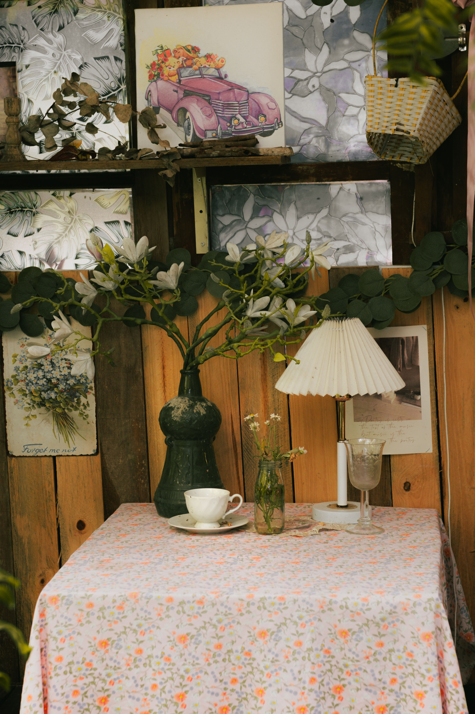
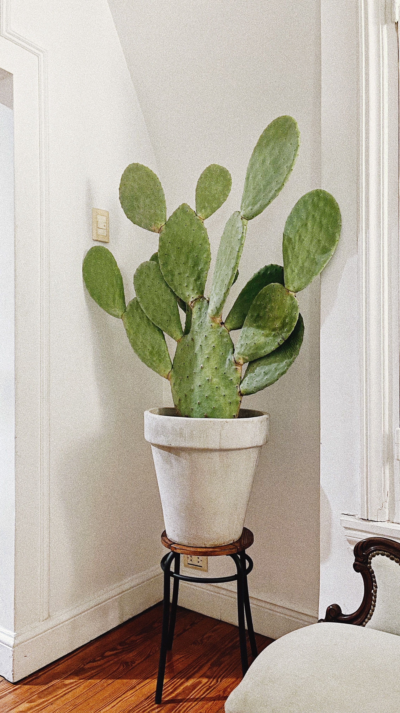
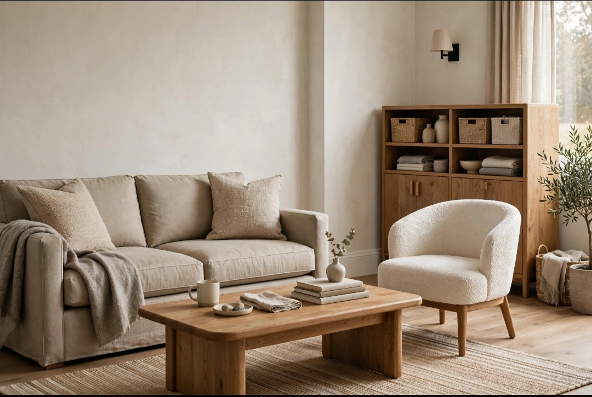

En este artículo
Introducción
Descubre cómo elegir plantas según temperatura, lluvias, humedad, viento y estaciones para crear un jardín más resistente y fácil de mantener.
La mejor forma de tomar decisiones acertadas es observar las condiciones reales antes de comprar o intervenir. Luz, clima, espacio, frecuencia de mantenimiento y recursos disponibles cambian por completo qué solución resulta adecuada.
En esta guía encontrarás criterios prácticos para analizar cada situación, evitar errores frecuentes y construir una rutina más sencilla. El objetivo no es seguir una fórmula rígida, sino aprender a adaptar las recomendaciones a tus plantas y a tu espacio.
Cuando una decisión afecta a varias plantas, conviene avanzar poco a poco. Probar una solución en una zona pequeña permite evaluar el resultado antes de aplicarla a todo el jardín o colección.
Comprende el clima local antes de elegir plantas
El clima determina buena parte del éxito de un jardín. Temperaturas mínimas y máximas, distribución de las lluvias, humedad, viento y duración de las estaciones influyen en el crecimiento. Una especie que prospera en una región puede necesitar cuidados excesivos o no sobrevivir en otra.
Consulta datos climáticos de tu zona y presta atención a los extremos, no solo a los promedios. Una planta puede tolerar una temperatura media agradable y, sin embargo, sufrir durante una noche de helada o una ola de calor. Conocer los límites ayuda a evitar compras poco realistas.
También existen microclimas dentro de una misma propiedad. Una pared orientada al sur puede acumular calor, mientras una zona baja puede retener más humedad. Antes de plantar, observa estas diferencias. Aprovecharlas permite ubicar cada especie donde tenga mejores condiciones.
Hablar con viveros locales y jardineros de la zona ofrece información práctica. Las plantas que llevan años creciendo en jardines cercanos son una referencia útil, aunque cada espacio debe evaluarse individualmente.
Ten en cuenta las temperaturas mínimas y máximas
Las plantas tienen rangos de tolerancia distintos. Algunas soportan heladas intensas, otras se dañan con temperaturas cercanas a cero y muchas especies tropicales necesitan ambientes cálidos durante todo el año. Revisa la resistencia al frío antes de incorporar una planta permanente al exterior.
El calor extremo también puede ser limitante. En regiones con veranos muy calurosos, algunas plantas de climas frescos reducen su crecimiento, se queman o requieren riego constante. Elegir especies adaptadas al calor disminuye el consumo de agua y la necesidad de sombreo artificial.
Las macetas exponen más las raíces a cambios de temperatura. Un recipiente pequeño se calienta y enfría con rapidez. Si cultivas especies sensibles, utiliza macetas adecuadas, evita superficies que acumulen demasiado calor y considera protección durante episodios extremos.
Cuando una planta está en el límite de tolerancia de tu clima, debes aceptar un mantenimiento mayor. Antes de comprar, decide si estás dispuesto a moverla, protegerla o reemplazarla. Para un jardín sencillo, las especies cómodamente adaptadas son una opción más estable.

Relaciona las plantas con el régimen de lluvias
La cantidad anual de lluvia es importante, pero también su distribución. Dos regiones pueden recibir volúmenes similares y tener experiencias muy distintas si una concentra las precipitaciones en invierno y otra las reparte durante el año.
En climas secos, las plantas resistentes a la sequía pueden reducir la necesidad de riego una vez establecidas. Eso no significa que no necesiten agua durante sus primeras semanas o meses. El establecimiento inicial es fundamental para desarrollar raíces capaces de explorar el suelo.
En zonas muy lluviosas, el drenaje adquiere mayor importancia. Plantas sensibles al encharcamiento pueden sufrir si el agua permanece alrededor de las raíces. Elevar bancales, mejorar la estructura del suelo o elegir especies adaptadas a humedad puede ser más efectivo que intentar cambiar constantemente las condiciones.
Utiliza acolchado cuando sea apropiado para conservar humedad, moderar temperatura y proteger el suelo. Mantén el material separado de tallos y troncos para evitar acumulaciones de humedad en zonas sensibles.
Considera humedad ambiental y ventilación
La humedad del aire afecta a muchas plantas, especialmente a especies tropicales y a determinadas enfermedades. En regiones muy húmedas, una vegetación demasiado densa puede reducir la circulación de aire y favorecer problemas en hojas y tallos.
Deja el espacio adecuado entre plantas según su tamaño adulto. Podar únicamente para corregir una plantación demasiado apretada genera más trabajo. Una buena distancia facilita ventilación, acceso y mantenimiento.
En climas secos, algunas especies de hojas finas o tropicales pueden deshidratarse con facilidad. Ubicarlas en zonas protegidas del viento o combinar con vegetación que genere un microclima más estable puede ayudar.
No intentes modificar radicalmente la humedad del exterior con soluciones domésticas. Es más eficiente elegir especies que toleren las condiciones naturales. La adaptación reduce dependencia de intervenciones constantes.
Evalúa la exposición al viento
El viento aumenta la evaporación, rompe tallos y puede desecar hojas. Jardines costeros, terrazas altas y espacios abiertos suelen necesitar especies resistentes y estructuras estables. Observa la dirección de los vientos dominantes antes de diseñar.
Setos, cercas permeables y grupos de plantas pueden reducir la velocidad del viento. Las barreras totalmente sólidas pueden generar turbulencias, por lo que el diseño debe adaptarse al lugar y cumplir normas locales.
Las plantas jóvenes necesitan atención adicional hasta desarrollar raíces fuertes. Tutores correctamente instalados pueden ayudar a determinados árboles, pero deben revisarse y retirarse cuando ya no sean necesarios.

En zonas costeras, la sal transportada por el aire puede dañar especies sensibles. Busca plantas tolerantes a salinidad y lava ocasionalmente el follaje con agua dulce cuando sea apropiado y exista acumulación visible.
Planifica un jardín adaptado y diverso
Un jardín resistente no depende de una única especie. Combinar árboles, arbustos, herbáceas y cubresuelos adaptados al clima crea capas que responden de forma diferente a las estaciones. La diversidad también aporta interés visual durante más meses.
Elige plantas por tamaño adulto, necesidades de agua y exposición. Agrupa especies compatibles para simplificar el riego. Evita introducir plantas invasoras o problemáticas en tu región; consulta listados locales antes de comprar especies poco conocidas.
Registra qué funciona. Después de cada temporada, anota qué plantas soportaron mejor el calor, el frío o las lluvias. Esta información permite ajustar futuras compras con experiencia propia.
Finalmente, acepta que el jardín evoluciona. Algunas plantas prosperarán y otras no. Sustituir una especie por otra mejor adaptada es parte del proceso. El objetivo no es luchar contra el clima, sino diseñar con él.
Zonas de resistencia y límites climáticos
En algunos países existen mapas de zonas de resistencia que clasifican regiones según las temperaturas mínimas habituales. Estas referencias ayudan a saber si una planta perenne puede sobrevivir al invierno, pero no sustituyen la observación local. Dos jardines dentro de la misma zona pueden tener exposiciones muy diferentes.
Utiliza estos mapas como punto de partida y combínalos con datos de calor, lluvia y humedad. Una especie resistente al frío puede sufrir igualmente en veranos demasiado cálidos o húmedos. Las fichas de cultivo completas ofrecen una visión más útil que un único número.
En zonas límite, pequeñas diferencias de ubicación pueden ser decisivas. Una pared que acumula calor puede permitir cultivar especies algo más sensibles, mientras un valle donde se acumula aire frío puede registrar heladas más intensas.
Si decides cultivar una planta en el límite de su tolerancia, acepta que necesitará protección adicional y que existe mayor riesgo. Para zonas estructurales del jardín, como árboles y setos, suele ser mejor elegir especies ampliamente adaptadas.
La relación entre clima y tipo de suelo
El clima influye en el suelo. En regiones con lluvias frecuentes, determinados terrenos permanecen húmedos durante largos periodos, mientras en climas secos la evaporación puede endurecer la superficie. Antes de elegir plantas, observa textura, drenaje y contenido de materia orgánica.
Una planta adaptada a un clima seco puede fallar si se coloca en un suelo que permanece saturado. Del mismo modo, una especie que tolera lluvia abundante puede necesitar más riego si el terreno es arenoso y drena extremadamente rápido.

Mejorar el suelo puede ampliar las posibilidades, pero no siempre es sensato intentar transformar por completo sus características. Elegir plantas compatibles con el terreno existente suele reducir mantenimiento y consumo de recursos.
Si tienes dudas, una prueba sencilla de drenaje y un análisis de suelo pueden aportar información útil. En proyectos grandes, un profesional puede ayudarte a interpretar resultados y planificar enmiendas.
Piensa en cómo cambia el jardín durante las estaciones
Una planta puede prosperar en primavera y sufrir en agosto o enero. Por eso la selección debe considerar todo el año. Busca información sobre floración, reposo, pérdida de hojas y tolerancia a extremos.
Combinar especies con distintos periodos de interés mantiene el jardín atractivo sin depender de una sola temporada. Arbustos perennes aportan estructura, mientras herbáceas y bulbos pueden ofrecer cambios de color durante el año.
También planifica tareas estacionales. Algunas plantas necesitan poda después de floración, protección invernal o división periódica. Si prefieres un jardín de bajo mantenimiento, prioriza especies que requieran menos intervenciones.
Registrar el comportamiento durante un año completo te permitirá ajustar futuras compras. La experiencia local se convierte con el tiempo en una de las mejores herramientas de selección.
Cómo aprovechar la experiencia de viveros y jardines cercanos
Los viveros locales pueden ofrecer información muy valiosa sobre qué especies funcionan realmente en tu región. Pregunta por exposición, frecuencia de riego, resistencia al frío y tamaño adulto. Si una planta necesita condiciones excepcionales, es mejor saberlo antes de llevarla a casa.
Observar jardines maduros del vecindario también ayuda. Las especies que llevan años creciendo bien bajo condiciones similares son una referencia práctica. Fíjate especialmente en plantas que prosperan sin riego excesivo o protección constante.
Eso no significa copiar exactamente otro jardín. Tu suelo, orientación y viento pueden ser distintos. Utiliza esas observaciones como filtro inicial y confirma después las necesidades de cada especie.
Con el tiempo, crear tu propia lista de plantas confiables simplifica futuras compras y permite invertir en ejemplares con mayor probabilidad de éxito.
Preguntas frecuentes
¿Cómo sé qué plantas son adecuadas para mi clima?
Consulta temperaturas mínimas y máximas, lluvias y humedad de tu región y compáralas con las necesidades de cada especie. Los viveros locales también pueden orientar.
¿Las plantas autóctonas siempre son la mejor opción?
Suelen estar bien adaptadas y pueden ofrecer beneficios ecológicos, pero también deben coincidir con las condiciones concretas de luz, suelo y espacio de tu jardín.
¿Qué hacer si quiero una planta que no tolera mi invierno?
Puedes cultivarla en maceta y trasladarla a un lugar protegido, siempre que dispongas de espacio y puedas ofrecer las condiciones necesarias.
¿Cómo reducir el riego en un clima seco?
Elige especies resistentes a la sequía, agrupa plantas con necesidades similares, mejora el suelo cuando corresponda y utiliza acolchado apropiado.
¿El viento puede cambiar qué plantas debo elegir?
Sí. En lugares muy expuestos conviene seleccionar especies resistentes al viento y utilizar macetas o tutores estables cuando sea necesario.
Conclusión
Cómo elegir plantas según el clima de tu región requiere observar, comparar y adaptar los cuidados a las condiciones reales. No existe una solución universal que funcione igual en todos los jardines o viviendas.
La constancia suele ser más útil que realizar cambios intensos de forma ocasional. Revisar las plantas, registrar resultados y ajustar pequeñas decisiones permite mejorar progresivamente.
También es importante respetar límites de seguridad y las instrucciones de productos, herramientas o instalaciones. Cuando una tarea supera el mantenimiento básico, recurrir a un profesional puede evitar riesgos y daños.
En definitiva, un buen resultado se construye combinando información, observación y experiencia. Cuanto mejor conozcas tu espacio, más fácil será tomar decisiones sostenibles y mantenerlas a largo plazo.